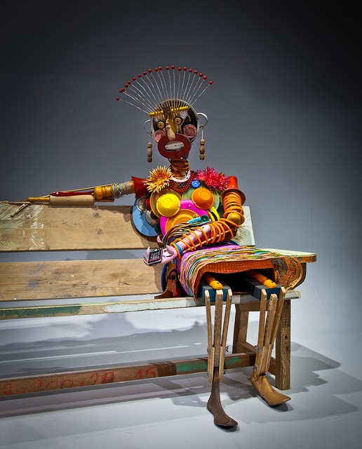
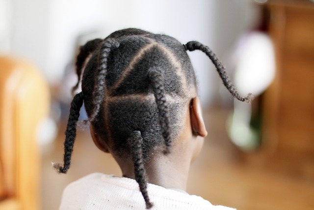

AFRICANA
bringing you all across Africa,
you will see, you will learn and you will belive
Formation and background
The AO was established on May 25, 1963, in Addis Ababa, Ethiopia, with the primary goal of promoting unity and solidarity among African countries, as well as supporting the liberation of African nations from colonial rule and apartheid.The organization emerged during a time when many African countries were gaining independence from European colonial powers. It was a direct response to the challenges facing newly independent African nations, including political instability, economic underdevelopment, and the need to address the legacies of colonialism.
The founding fathers of the AO included notable African leaders such as Kwame Nkrumah of Ghana, Julius Nyerere of Tanzania, Haile Selassie of Ethiopia, Sékou Touré of Guinea, and Nnamdi Azikiwe of Nigeria, among others.
Objectives of Africana
The oblectives includes:- Promoting Unity and Solidarity: Ensuring African nations collaborated to address common challenges.
- Defending Sovereignty: Protecting the territorial integrity of African states from external interference.
- Liberating Colonized African Nations: Supporting the independence struggles of African countries still under colonial or apartheid rule.
- Promoting Economic and Social Development: Encouraging the economic integration of Africa.
- Promoting Peace and Security: Addressing conflicts within and between African nations.
Achievements of Africana
- Liberation of African Nations: The AO played a pivotal role in supporting liberation movements in countries still under colonial rule. It provided diplomatic, financial, and political support to independence movements in places like Angola, Mozambique, Guinea-Bissau, Zimbabwe, and Namibia.
- Ending Apartheid: The OAU was instrumental in the international campaign to end apartheid in South Africa. The organization imposed sanctions on South Africa, supported the African National Congress (ANC) and other anti-apartheid groups, and helped push for global awareness of the apartheid regime's human rights violations.
- Pan-Africanism: The AO embodied the Pan-African ideals, promoting the vision of a united continent that worked together for the betterment of all African people. It helped lay the foundation for modern African integration efforts, such as the African Union (AU).
- Promotion of Decolonization: The AO worked alongside the United Nations and other international bodies to accelerate the decolonization process, advocating for the independence of remaining colonies like Western Sahara and supporting African self-determination
Impact on African History
The AO's legacy in African history is significant. It was the first continent-wide organization that brought together newly independent African countries to address their shared challenges. The AO symbolized the collective will of African nations to overcome colonial legacies, fight for self-determination, and promote unity.The AO's contributions to African liberation, the promotion of African identity, and the fight against apartheid made it a key player in shaping modern Africa. While the AO's legacy was mixed due to some limitations, it laid the foundation for the African Union, which continues to address Africa's challenges and opportunities today.
In summary, the Africana Organization played an essential role in the political and historical development of Africa in the 20th century. Its focus on unity, liberation, and solidarity among African nations remains a crucial aspect of African history.

Step into a world where history, culture, and creativity come together at Echoes of Africa:
A Celebration of Heritage Through Art. This immersive African art event offers a dynamic platform to showcase the richness of African history, highlighting its vibrant traditions, diverse cultures, and powerful narratives through visual art.
 In a monumental effort to celebrate the vast and diverse history of the African continent,
Nigeria proudly sponsors Discover Africa: A Journey Through Heritage, Innovation,
and Culture. This exciting event will bring together leaders, innovators, thinkers,
and cultural ambassadors from across the African continent to share, explore,
and celebrate Africa's rich history, cultural diversity, and bright future.
In a monumental effort to celebrate the vast and diverse history of the African continent,
Nigeria proudly sponsors Discover Africa: A Journey Through Heritage, Innovation,
and Culture. This exciting event will bring together leaders, innovators, thinkers,
and cultural ambassadors from across the African continent to share, explore,
and celebrate Africa's rich history, cultural diversity, and bright future.

Day of the African Child
The Day of the African Child is celebrated on June 16th.
The theme for 2024 was "Education for All Children in Africa: The Time is Now".
The day was created to celebrate children across Africa and renew commitments to addressing the challenges they face.
Featuring
.jpg)
FIRST Robotics is a global event that is often held in multiple locations across the world, including African nations like South Africa, Kenya, and Nigeria. The competition allows students from high schools and universities to design, build, and program robots to complete specific tasks. It's a fantastic event for encouraging young talent in robotics.
Hackathons and Innovation Challenges
Hackathons and innovation challenges are frequently held across Africa to tackle
some of the continent's most pressing problems with innovative tech solutions.
Events like the Orange Social Venture Prize Africa & the Middle East (OSVP) or Google Developer Groups’ hackathons bring together tech enthusiasts to create apps, platforms, or
robotic systems that address local needs like healthcare, education, and agriculture

The Pan African Elders Forum is a space where influential African elders and community leaders gather to discuss matters of regional importance. This forum often focuses on building African unity, promoting peace, resolving conflicts, and ensuring that the continent's rich cultural heritage is preserved for future generations. Elders from diverse backgrounds, including traditional leaders and retired statesmen, play an integral role in these discussions.
We'd love to hear from you
Tell us what you want us to bring to your door next!
Contact Us:
africana@info.comafricanadepth@gmial.com